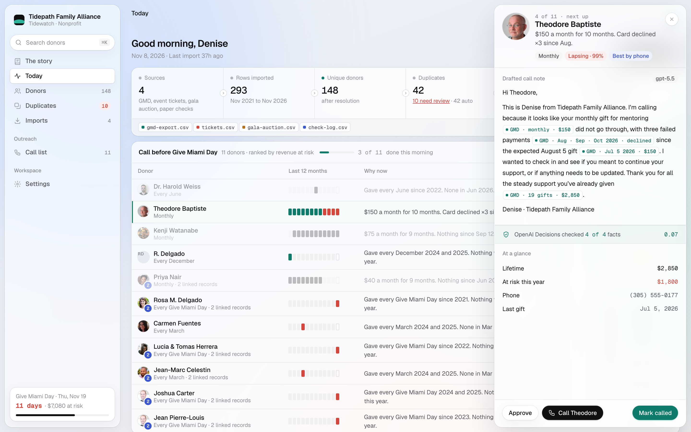
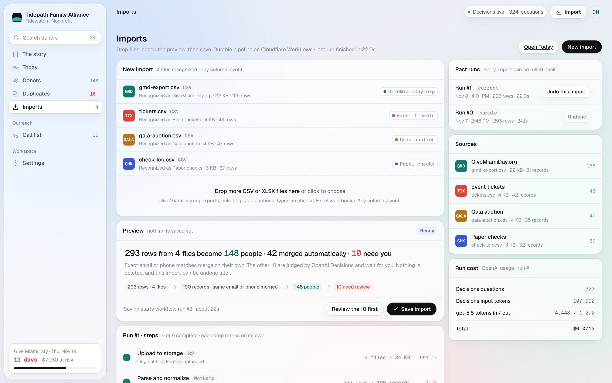
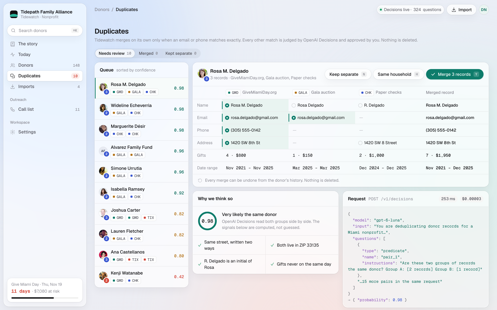
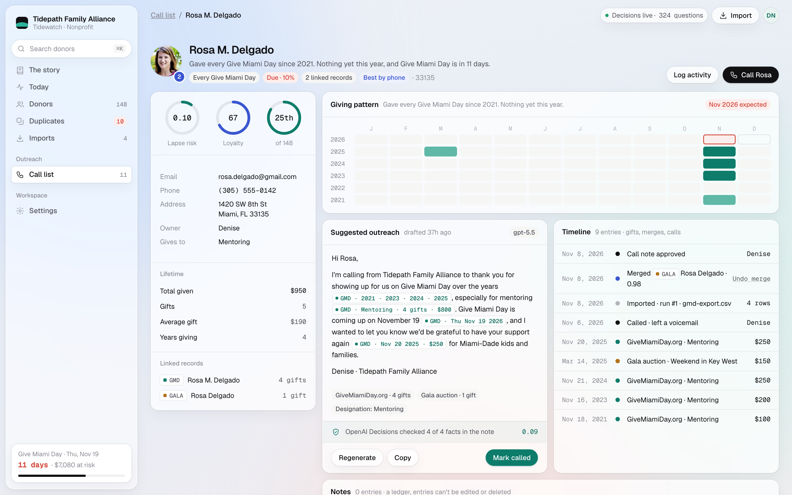
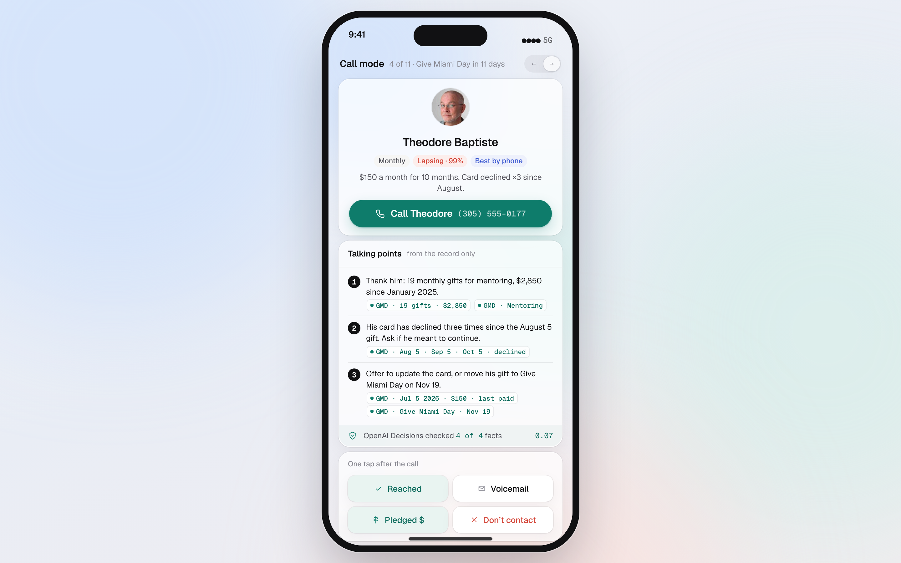
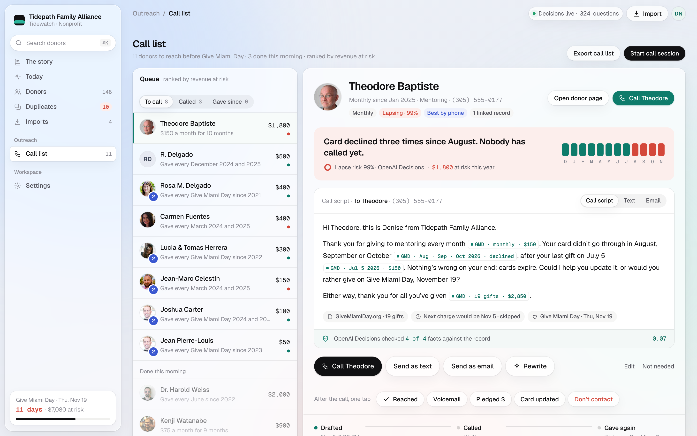
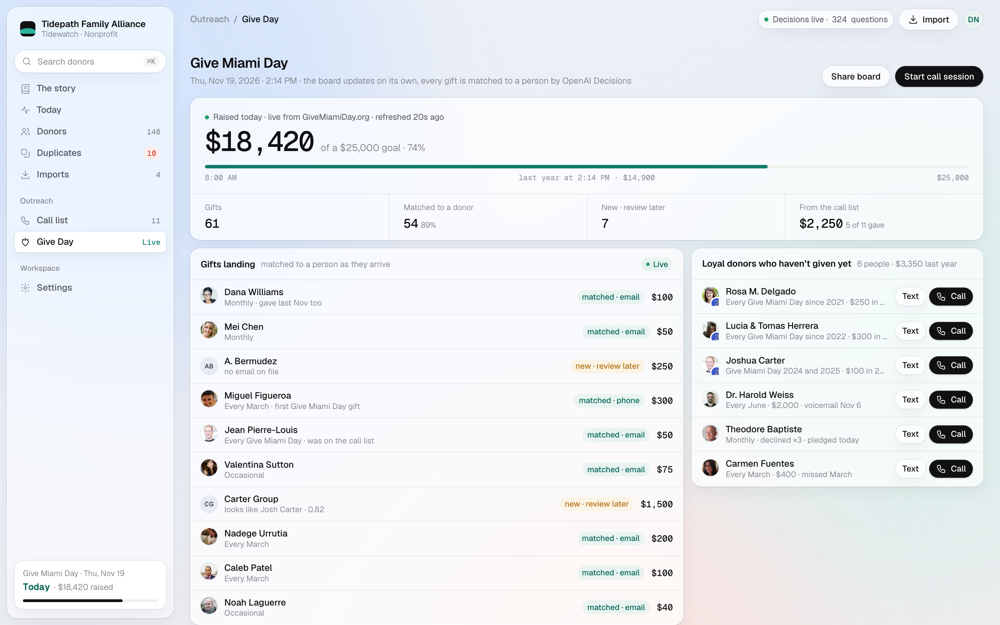

Seven screens from the next release, built inside the Tidewatch you already use. Same shell, same calm. What changes: the morning list finishes itself, every claim carries a receipt, imports preview before they save, and Give Miami Day gets a live board.

The call list now counts itself down (3 of 11 done, finished rows go quiet) and a row opens a drawer with the drafted note. Every fact in the note carries its receipt, and Decisions says it checked 4 of 4. Open the mockup

Drop any CSV or XLSX. Tidewatch recognizes each file, previews what 293 rows become (148 people, 42 merged, 10 for you) and lets you review the 10 first. Any past run can be undone. Open the mockup

Same household joins Keep separate and Merge, with Y / H / N keys. Evidence reads in plain English, and a quiet line says every merge can be undone. Open the mockup

Rosa’s page keeps everything. New: a one-line reason under her name, citation chips inside the suggested note, and merge, import, call and approval events on the timeline with an Undo merge link. Open the mockup

Theodore’s reason, one big Call button, three talking points with citations, the Decisions check, and one-tap outcomes: Reached, Voicemail, Pledged $, Don’t contact. Open the mockup

Modeled on the AttendClear calls page: the queue on the left, one donor at a time on the right. The reason in one sentence, twelve months of giving, a call script with receipts, Call, text or email, then one tap to log what happened. Open the mockup

A live board for November 19: total vs goal, gifts landing matched to a person as they arrive, and the loyal donors who haven’t given yet with Text and Call. Open the mockup